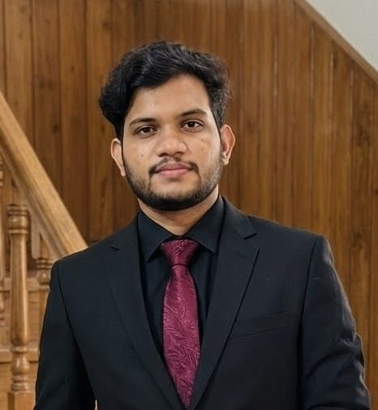

Growing up where the nearest reliable hospital was hours away taught me something that no benchmark dataset can capture: the difference between a system that works on average and a system that works for everyone. That lesson has shaped everything I have built since.

I grew up in rural Bangladesh. The healthcare facilities near my home were basic — well-intentioned, staffed by dedicated people, but limited in diagnostic capability. For anything serious, the journey to a real hospital was long and expensive, which meant many families simply did not make it. Conditions that a timely diagnosis would have caught early were instead discovered late, when options had narrowed.
I was not a doctor. I could not build a hospital. But I was drawn to computers from an early age, and I had a growing sense that the tools being developed in research labs and technology companies — tools for prediction, for pattern recognition, for making sense of complex data — might eventually be pointed at exactly this problem.
When I enrolled in Computer Science at the University of Information Technology and Sciences (UITS), I did not know what machine learning was. By the time I graduated — ranked 6th in my department with a CGPA of 3.62 — I had published several papers, was collaborating with three research labs, and had a thesis on multi-disease prediction using machine learning.
The research trajectory was not accidental. From my first exposure to supervised learning, I steered toward healthcare applications: diabetes diagnosis, Parkinson's prediction, maternal health risk stratification. These were not arbitrary choices. They were the conditions that I had watched go undiagnosed around me growing up — conditions where earlier, more reliable prediction could change outcomes.
What I did not anticipate was how quickly the limitations of standard ML approaches would become visible. High accuracy numbers were easy to achieve on benchmark datasets. Making those numbers mean something for real patients — especially patients from demographics underrepresented in training data — was much harder.
"The communities most likely to be served by AI-powered diagnostics are the communities least likely to appear in the training data. That contradiction is not a footnote — it is the central problem of medical AI."
Over four years of research across three labs, I worked on maternal health with Professor Mohammad Mobarak Hossain at Shanto-Mariam University, on healthcare AI and IoT with the Rising Research Lab, and on computer vision in medicine at EMPATHY Lab, Independent University Bangladesh. The work produced 13 publications and 159 citations — numbers I am proud of, but which were never the point.
The point was figuring out how to make AI systems that actually worked in the populations they were meant to serve. That meant:
Each of these was a response to a constraint I had seen in practice, not a theoretical problem I had read about in a paper.
The founding of OgroPath came from a specific frustration, not a grand strategic vision. Bangladesh has a brutally competitive medical entrance exam. Every year, hundreds of thousands of students compete for a small number of seats at public medical colleges. The preparation resources available to students in Dhaka are vastly better than what is available to students from smaller cities and rural areas — expensive coaching centers, experienced tutors, curated question banks.
I had the technical skills to change this. In April 2025, I built the first version of OgroPath: an AI-powered platform that gives every student, regardless of location or income, access to a 21,000+ question bank, NLP-powered question generation, adaptive learning that identifies weaknesses and builds personalized study plans, and a real-time national ranking system.
The technology stack is the same one I had developed through years of research: LLMs for question generation, FastAPI for the backend, PostgreSQL for the data layer, React for the interface. But the application is something different from anything I had built in a research context — a production system used daily by real students whose futures depend on it performing reliably.
Building OgroPath taught me something that research had not fully prepared me for: democratizing AI is an operations problem as much as a research problem. A model that achieves 95% accuracy in a lab but runs too slowly on the network connection available to a rural student fails the student just as surely as a model that achieves 80% accuracy. A platform that requires a high-end smartphone excludes the students who most need it.
Every technical decision in OgroPath was evaluated not just for performance but for accessibility. Lightweight inference. Graceful degradation on slow connections. Offline-capable features for areas with intermittent connectivity. Low-bandwidth image compression for visual content. These are not glamorous engineering problems — they do not generate papers or GitHub stars — but they are the difference between a platform that serves students in Dhaka and a platform that serves students everywhere.
The same principle applies to my healthcare AI research. A bias-mitigation framework that requires a high-end GPU cluster to run is not accessible to the clinical AI teams in developing countries who need it most. M-TRUST was designed to run on standard hardware, with a one-line API, because accessibility is a technical requirement, not just a value.
I am now Deputy Manager for AI and ML at BRAC, one of the largest development organizations in the world — an organization whose mission is explicitly about reaching underserved populations. The convergence is not coincidental. Every piece of research, every production system, every failed prototype has been pointing toward the same question: how do we build AI that works for everyone?
There is no clean answer. But I am increasingly convinced that the answer requires people who have seen, firsthand, what "not working for everyone" actually means — people who bring not just technical skill but a specific urgency to the problem. Growing up in rural Bangladesh gave me that urgency. Everything I have built since has been an attempt to make it useful.